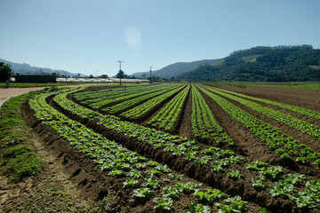
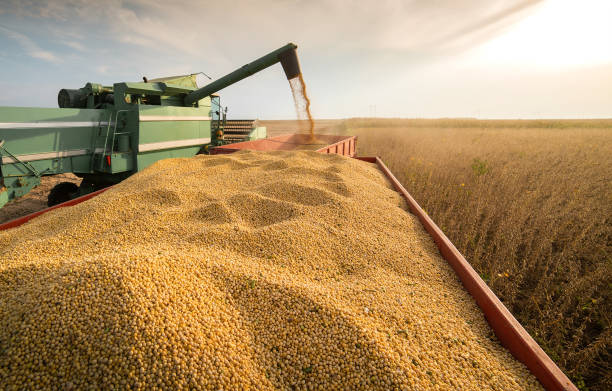
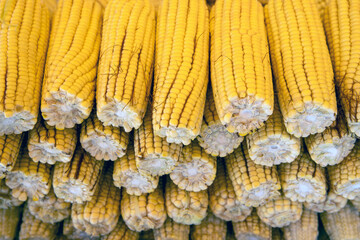
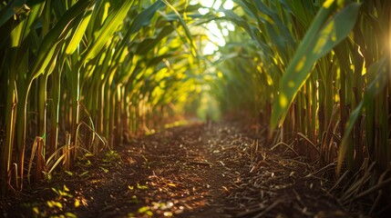
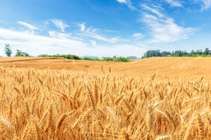
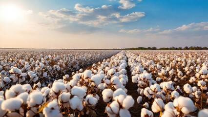
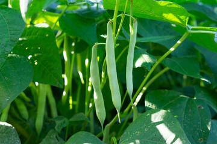
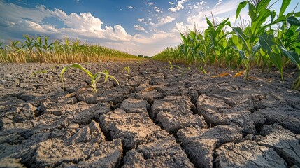

História da Agricultura no Brasil
A agricultura no Brasil tem uma longa história, que remonta ao período colonial.
A história da agricultura no Brasil é rica e cheia de transformações.
período Pré-Colonial: Antes da chegada dos portugueses, os povos indígenas já praticavam a agricultura, cultivando mandioca, milho, amendoim e abóbora, utilizando técnicas adaptadas ao ecossistema local1.
Período Colonial: Com a chegada dos portugueses no século XVI, a cana-de-açúcar foi introduzida e se tornou a principal atividade econômica, especialmente no Nordeste. A agricultura era baseada na monocultura e na mão de obra escrava.
Século XVIII e XIX: A partir do século XVIII, o café começou a ganhar importância, especialmente no Sudeste. No século XIX, o café se tornou o principal produto de exportação do Brasil, impulsionando a economia e a urbanização.
Século XX: Durante o século XX, a agricultura brasileira passou por diversas modernizações, incluindo a mecanização e a introdução de novas tecnologias. A produção de soja, milho e outros grãos aumentou significativamente.
Atualidade: Hoje, o Brasil é um dos maiores produtores e exportadores de alimentos do mundo. A agricultura moderna no país é caracterizada por alta produtividade e uso de tecnologias avançadas, embora ainda enfrente desafios como a concentração de terras e a sustentabilidade ambiental.
Culturas Agrícolas no Brasil
-
Soja
A soja é uma das principais culturas agrícolas do Brasil, com uma produção de mais de 120 milhões de toneladas em 2022.
 -
Milho
O milho é outra cultura importante do Brasil, com uma produção de mais de 80 milhões de toneladas em 2022.
 -
Cana-de-açúcar
A cana-de-açúcar é uma cultura importante do Brasil, com uma produção de mais de 600 milhões de toneladas em 2022.

Regiões Agrícolas do Brasil
-
Região Sul
A Região Sul do Brasil é conhecida por sua produção de soja, milho e trigo.
 -
Região Centro-Oeste
A Região Centro-Oeste do Brasil é conhecida por sua produção de soja, milho e algodão.
 -
Região Nordeste
A Região Nordeste do Brasil é conhecida por sua produção de cana-de-açúcar, milho e feijão.

Desafios da Agricultura no Brasil
A agricultura no Brasil enfrenta vários desafios, como a falta de infraestrutura, a escassez de água e a mudança climática.
